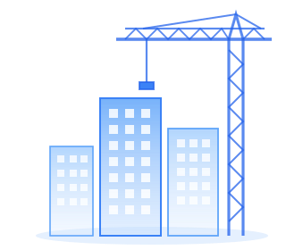

domain
Total Proyek
51
Proyek

|
|
description
Kepatuhan Contract Management
(14 Dokumen)
62,7%
32 dari 51 Proyek
autorenew
Kepatuhan Perubahan (VO, Claim,
Anti Claim & Insurance)
58,8%
30 dari 51 Proyek
bar_chart
Perbandingan Kepatuhan per Operasi
CM
Perubahan
pie_chart
Ringkasan per Departemen Operasi
Operasi 1 - 19 Proyek
63,2%
CM
52,6%
Perubahan
Operasi 2 - 18 Proyek
77,8%
CM
77,8%
Perubahan
Operasi 3 - 14 Proyek
42,9%
CM
42,9%
Perubahan
show_chart
Progress Kepatuhan per Operasi
Operasi 1
Operasi 2
Operasi 3
77,8%
63,2%
42,9%
calendar_month
Kalender
Juli 2026
Agenda Penting
•••
notifications
27 Jul - Cut Off Monitoring
›
folder
Quick Access
description
Kelengkapan Dokumen
Filter: CCMS
Klik batang dokumen untuk memfilter proyek di matriks bawah
Contract Management (14 Dokumen)
Klik baris untuk filter
Perubahan (6 Dokumen)
Klik baris untuk filter
grid_on
Matrix Kelengkapan Dokumen per Proyek
Lengkap
Belum Lengkap
Belum Diisi
Filter OP:
Status:
| No | Nama Proyek | OP | Contract Management (14 Dokumen) | Perubahan (6 Dokumen) | ||||||||
|---|---|---|---|---|---|---|---|---|---|---|---|---|
| CCMS | Kontrak | SPP | SPMK | BASTL | ... | VO | Claim | Anti Claim | Insurance | |||
Menampilkan 1 - 5 dari 51 Proyek
warning
Proyek Prioritas Tindak Lanjut
Filter Status:
1-5
| No | Nama Proyek | OP | CM | Perubahan | Status | Keterangan |
|---|
Catatan ADKON: 18 Proyek memerlukan kelengkapan VO / Addendum 1